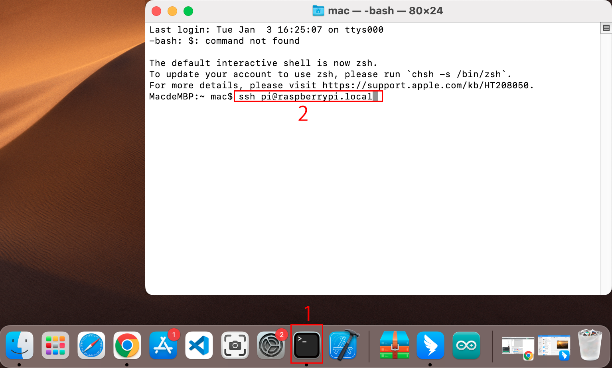

Note
Hello, welcome to the SunFounder Raspberry Pi & Arduino & ESP32 Enthusiasts Community on Facebook! Dive deeper into Raspberry Pi, Arduino, and ESP32 with fellow enthusiasts.
Why Join?
Expert Support: Solve post-sale issues and technical challenges with help from our community and team.
Learn & Share: Exchange tips and tutorials to enhance your skills.
Exclusive Previews: Get early access to new product announcements and sneak peeks.
Special Discounts: Enjoy exclusive discounts on our newest products.
Festive Promotions and Giveaways: Take part in giveaways and holiday promotions.
üëâ Ready to explore and create with us? Click [here] and join today!
For Mac OS X Users
For Mac OS X users, SSH (Secure Shell) offers a secure and convenient method to remotely access and control a Raspberry Pi. This is particularly handy for working with the Raspberry Pi remotely or when it’s not connected to a monitor. Using the Terminal application on a Mac, you can establish this secure connection. The process involves an SSH command incorporating the Raspberry Pi’s username and hostname. During the initial connection, a security prompt will ask for confirmation of the Raspberry Pi’s authenticity.
To connect to the Raspberry Pi, type the following SSH command:
ssh pi@raspberrypi.local
A security message will appear during your first login. Respond with yes to proceed.
The authenticity of host 'raspberrypi.local (2400:2410:2101:5800:635b:f0b6:2662:8cba)' can't be established. ED25519 key fingerprint is SHA256:oo7x3ZSgAo032wD1tE8eW0fFM/kmewIvRwkBys6XRwg. Are you sure you want to continue connecting (yes/no/[fingerprint])?
Input the password for the Raspberry Pi. Be aware that the password won’t display on the screen as you type, which is a standard security feature.
pi@raspberrypi.local's password: Linux raspberrypi 5.15.61-v8+ #1579 SMP PREEMPT Fri Aug 26 11:16:44 BST 2022 aarch64 The programs included with the Debian GNU/Linux system are free software; the exact distribution terms for each program are described in the individual files in /usr/share/doc/*/copyright. Debian GNU/Linux comes with ABSOLUTELY NO WARRANTY, to the extent permitted by applicable law. Last login: Thu Sep 22 12:18:22 2022 pi@raspberrypi:~ $